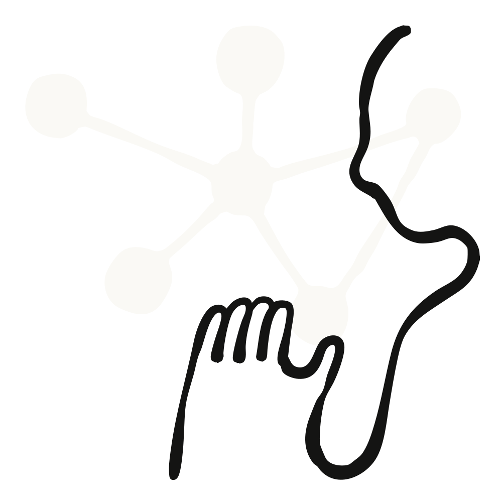

오늘부터 채팅에서 쓰던 메모리가 Claude Cowork에서도 똑같이 쓰인다. Claude가 기억하는 내용은 주제별로 전부 열어볼 수 있고, 하나하나 고치거나 지울 수 있다. 건강·신념 같은 민감한 주제는 기본적으로 저장하지 않지만, 매번 다시 설명하기 지치는 주제라면 설정에서 켤 수 있다.

핵심은 한 줄이다. 이제 Claude와 일하는 곳이 어디든, Claude는 당신에 대해 이미 아는 것에서 출발한다. 채팅에서 쌓은 메모리와 Claude Cowork의 메모리가 하나로 합쳐졌기 때문이다.
그리고 그 메모리는 블랙박스가 아니다. Claude가 기억하는 내용은 주제(topic)별 파일 목록으로 전부 볼 수 있고, 읽고 고치고 지울 수 있다. 건강이나 신념처럼 민감하다고 여겨지는 주제는 기본값에서 저장되지 않는다. 다만 그런 주제야말로 매번 다시 설명하기 지친다면, 메모리 설정에서 직접 켤 수 있다.
Cowork에도 메모리가 생겼다. 그런데 새 메모리가 아니라, 채팅에서 쓰던 바로 그 메모리다. 다시 설명할 일이 줄고, 하던 자리에서 이어가는 일이 늘어난다는 뜻이다.
Cowork가 클라우드에서 작업을 돌릴 때, Claude가 당신의 채팅에서 기억한 것이 그 자리에 함께 있다. 반대 방향도 마찬가지다. 몇 달치 대화에 걸쳐 쌓아 온 맥락 — 예를 들어 당신의 3분기 우선순위나 진행 중인 프로젝트들의 상태 — 이 Cowork에 일을 넘기는 순간부터 이미 반영되어 있고, Cowork에서 나온 내용은 다시 채팅으로 넘어온다.
원문이 든 구체적인 예시는 세 가지다.
동작 방식도 바뀌었다. 이전처럼 대화가 끝난 뒤 요약해서 저장하는 것이 아니라, 이제 Claude는 대화하는 도중에 주제를 메모리에 추가한다.
그래서 "프로젝트 마감이 9월로 밀렸다"고 말해 두면, 다음 대화는 "이거 기억해 둬"라고 따로 말하지 않아도 이미 그 사실을 알고 있다.
물론 원하지 않을 때를 위한 통제 장치도 있다. 메모리는 언제든 일시정지하거나 초기화(reset)할 수 있다.
Claude가 기억하는 모든 것은 메모리 설정의 Topics 아래에 파일 목록 형태로 놓여 있다. 각 파일을 읽고, 수정하고, 삭제할 수 있다.
파일은 짧다. 그리고 한 번의 수정이 모든 곳에 반영된다는 점이 핵심이다. 예를 들어 회사의 옛 이름이 잘못 남아 있다면, 파일 하나만 고치면 그 이후의 모든 대화가 올바른 이름을 쓴다.


기본값에서 Claude는 개인적이거나 민감한 성격의 주제를 저장하지 않는다. 원문이 예로 든 범주는 다음과 같다.
그런데 어떤 사람에게 민감한 정보가, 다른 사람에게는 Claude가 기억해 주면 유용한 정보일 수 있다. 그래서 "메모리에 민감한 주제 포함(include sensitive topics in memory)" 설정을 켜는 선택지가 있다. 켜 두면, 예컨대 주간 식단을 짜기 위해 레시피를 추천할 때 Claude가 당신의 글루텐 알레르기를 기억하고 반영한다.
이 설정을 켰을 때의 동작은 세 가지로 정리된다.
안전과 프라이버시를 위해, 민감한 주제 저장을 켜 두더라도 Claude가 메모리에 담지 않는 항목이 따로 있다.
이런 정보를 메모리에 넣을 수 없을 때는 Claude가 그 사실을 사용자에게 알려 준다. 더 자세한 내용은 헬프 센터(Help Center)에서 확인할 수 있다.
제공 범위와 기본값은 플랜에 따라 다르다.
| 구분 | 내용 |
|---|---|
| Free · Pro · Max | 웹, 데스크톱, 모바일 전반에서 메모리가 기본으로 켜져 있다. |
| 민감한 주제 | 메모리에 저장하는 설정은 기본으로 꺼져 있다. |
| iOS · Android | 최신 업데이트를 받으려면 모바일 앱을 최신 버전으로 업데이트해야 한다. |
| Team · Enterprise | 조직 내 사용 가능 여부는 관리자(admin)가 통제한다. 개별 사용자에게는 본인이 켜기 전까지 꺼져 있다. |
메모리를 켜고 Claude가 무엇을 기억할지 조정하려면 설정 > 메모리(Settings > Memory)로 가면 된다.